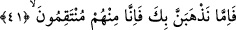

(s.a.), onları hakka dâvette çok ısrarlı olduğu için sanki, “Ben, onlara hakkı duyurur ve
onları hidâyet ederim” diyen ve buna muktedir olduğunu iddiâ eden biri durumunda
mütâlaa edilmişti. Tahsis olmamakla beraber hükme kuvvet kazandırmak maksadıyla
böyle buyrulmuş ve Allah Teâlâ bu durumu izah sadedinde hayret ve taaccübü
gerektiren tepkili bir tavır sergilemiştir.
İbn Şeyh şöyle demektedir: Gerçekten bu ne güzel bir tertiptir. Zîrâ insan, dünya
arzusuyla meşgul olup cismânî haz ve zevklerine meylettiği için sanki gözünde hafif bir
görme bozukluğu varmış gibi olur. Sonra bu dünya arzusu ve cismânî hazlara olan meyli
arttıkça ve ruhânî nimetlerden de şiddetle yüz çevirdikçe artık bu görme bozukluğu o
nispette artar. Nihâyet bu şaşılık tamamen körlüğe dönüşür.
Burada tepkinin merkezi, ileri seviyede olan sapıklıktaki istikrardır. Öyle ki artık bu
sapıklıktan dönüş yoktur. Yoksa Hâdî; yani hidâyet edici olan Allah’tan yahut hidâyete
vesile olan Peygamber’den kaynaklanan bir kusur söz konusu değildir.
Âyette şuna da işâret edilmektedir ki, hidâyet işine Allah’tan başka kimse muktedir
olamaz. Allah Teâlâ kerhen de cebren de bunu icrâ eder. Yani sağıra işittirmeye, kör
olanı hidâyete erdirmeye, kâfiri mümin yapmaya Allah’tan başka kimsenin gücü yetmez.
Allah yüce kudreti ve kudretinin mümkinâttan her şeye taalluk etmesiyle bu işi yapar ve
âdeta “Ancak biz kendimiz, inâyetimizle hidâyete ulaştırırız” buyurur.
41. Biz seni onlardan alıp götürsek de yine onlardan intikam alırız.
“Biz seni onlardan alıp götürsek de” şüphesiz hem dünyada hem de âhirette
“onlardan intikam alırız.”Onların azâbını sana göstermeden seni öldürüp bu şekilde
senin ve müminlerin gönüllerini ferahlatırız. Sen gönlünü hoş tut, seni kendi
rahmetimize alırsak da onlara yapılan azâbı sana gösteririz.
Diğer bir mânâ şöyledir: Senin ruhunu kabzedip senin ve müminlerin gönüllerine şifâ
olacak azâbını görmeden seni öldürürüz.
Şâir der ki:
Kimsenin ölümüne sevinme,
Zaman seni de çok bırakmayacaktır.
İbn Ata şöyle demiştir: Ey Peygamber (s.a.)! Sen onların arasında eman ve can
güvenliğisin. Şâyet seni öldürür yanımıza alırsak onlardan intikam alırız. Öyle ise akıllı
insanlar, aralarında sâlih kimselerin bulunmasını nimet ve ganîmet bilsinler. Onlara
düşmanlık yapmaktan kaçınsınlar. Zîrâ onlara düşmanlık helâki gerektirir.
Yahya b. Muâz şöyle demektedir: Allah’ın, kulları aleyhinde iki hucceti vardır. Biri